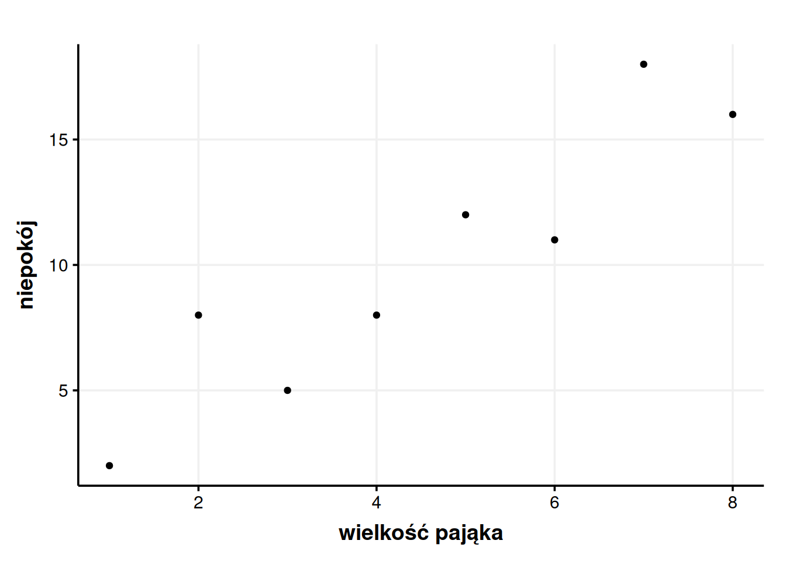
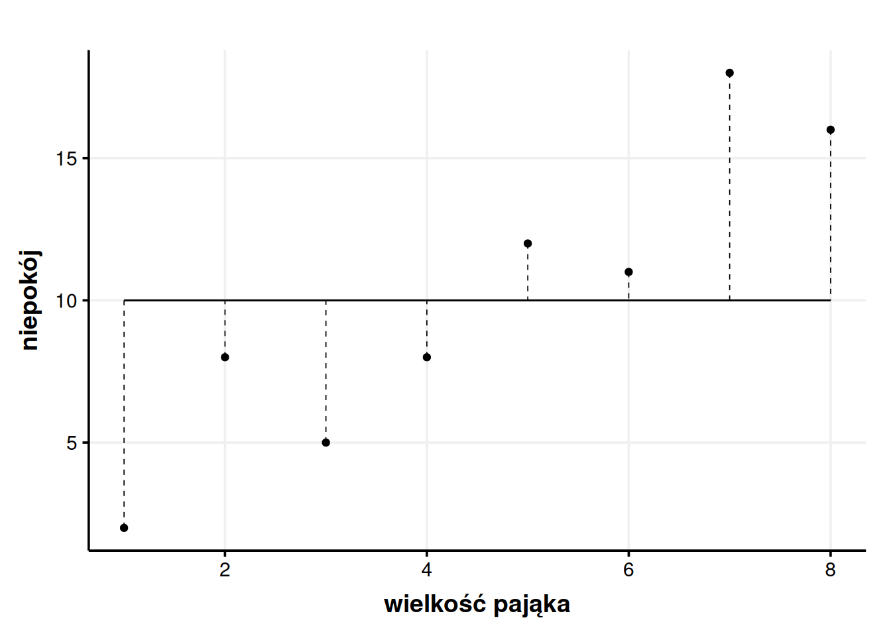
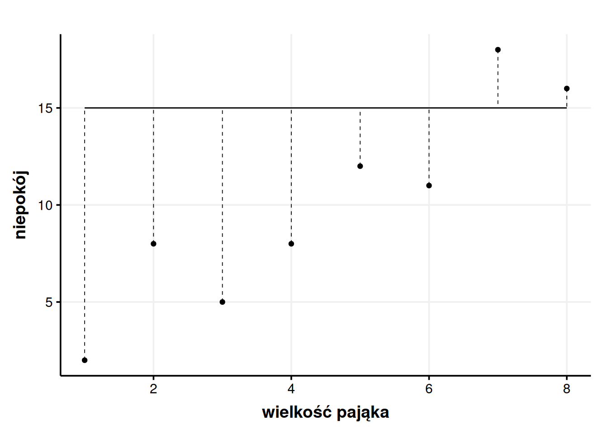
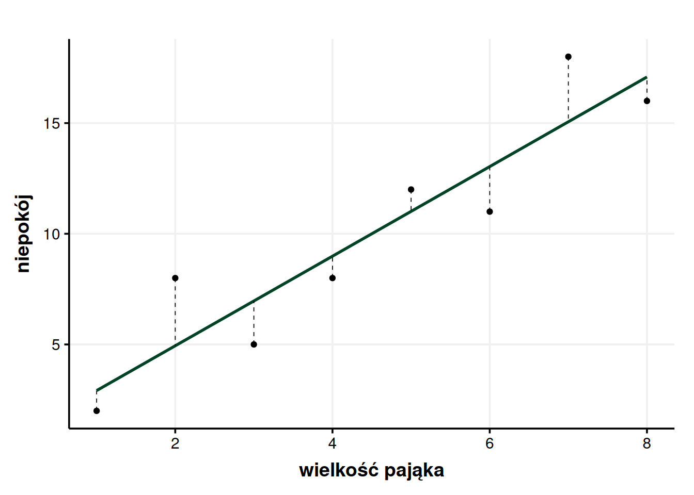
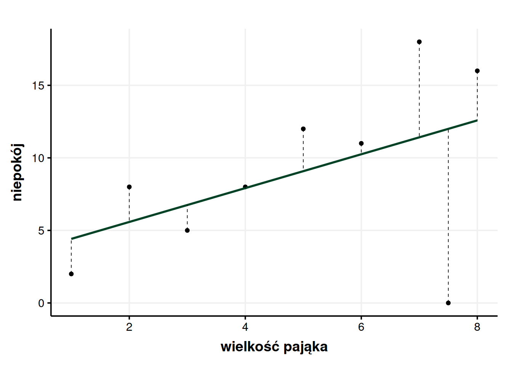
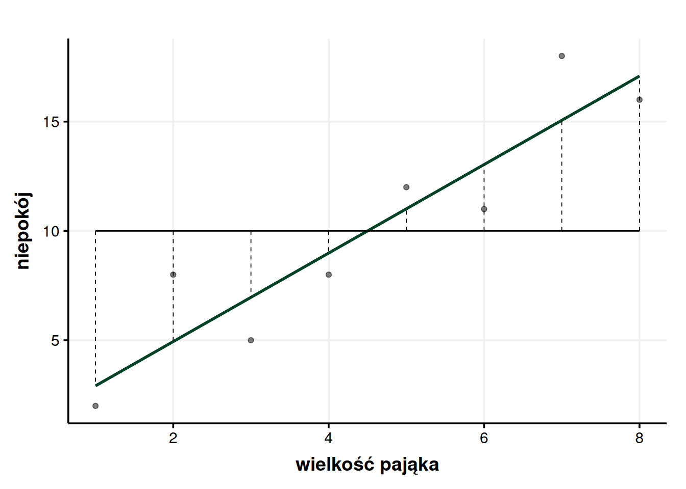

| wielkość pająka | niepokój |
|---|---|
| 1 | 2 |
| 2 | 8 |
| 3 | 5 |
| 4 | 8 |
| 5 | 12 |
| 6 | 11 |
| 7 | 18 |
| 8 | 16 |
Wyjaśnianie wariancji i test F
Statystyka
Co to znaczy, że geny wyjaśniają 90% wariancji wzrostu? Że z moich 170 cm wzrostu 153 cm zawdzięczam genom, a pozostałe 17 cm środowisku? Czym w ogóle jest wariancja? Odpowiem na to pytanie, jak i wprowadzę pojęcie modelu i jego testowania.
W psychologii można spotkać się z przytaczaniem wartości odziedziczalności. Możemy, dla przykładu, przeczytać, że wzrost jest odziedziczalny w 90% (Plomin, DeFries, McClearn, & McGuffin, 2001). Ale co to znaczy? Że z moich 170 cm wzrostu 153 cm zawdzięczam genom, a pozostałe 17 cm środowisku? To jest bez sensu. Czy odziedziczalność powie mi, czy byłem skazany na bycie niskim od początku albo czy dało się tego uniknąć? W Genetyce zachowania możemy przeczytać, że odziedziczalność to:
Część zmienności fenotypowej pomiędzy osobnikami, która może być przypisana różnicom genetycznym w określonej populacji (Plomin i in., 2001, s. 401).
W innym miejscu spotykamy uszczegółowienie:
Odziedziczalność to odsetek (część) wariancji fenotypowej, którą można przypisać różnicom genetycznym pomiędzy jednostkami (Plomin i in., 2001, s. 104).
Po którym następuje groźnie brzmiące ostrzeżenie:
Odziedziczalność odnosi się do wkładu genetycznego do różnic indywidualnych (wariancji), a nie do fenotypu pojedynczej jednostki (Plomin i in., 2001, s. 106).
Łatwo jest zrozumieć, że istnieje jakieś nieporozumienie co do tego, czym jest odziedziczalność. Widzimy wyraźnie, że odziedziczalność nie ma oznaczać ograniczeń, jakie biologia narzuca na jednostkę, ale że jest to miara, która w jakiś sposób dotyczy całej populacji. Pojawia się tajemnicza wariancja, co powoduje mroczne skojarzenia z matematyką. Ale ciągle możemy mieć wątpliwości co do tego, co ma znaczyć, że wzrost jest odziedziczalny w 90%? Bez tła statystycznego powyższe wyjaśnienia właściwie nic nie wyjaśniają. Ale na ich podstawie możemy wyrazić myśl o wzroście tak: czynniki genetyczne wyjaśniają 90% wariancji w zakresie wzrostu w populacji. I tak dochodzimy do clou tego tekstu – co to znaczy, że coś wyjaśnia 90% wariancji?
1 Średnia jako model
By zrozumieć sens odziedziczalności (i podobnych tworów) w kontekście wyjaśniania wariancji, musimy najpierw powiedzieć sobie coś o tym, czym jest owa tajemnicza wariancja. Wykorzystamy do tego spreparowany zbiór danych nt. związku wielkości pająków z niepokojem odczuwanym przez obserwatorów(na podstawie: Field, Miles, & Field, 2012). Wyobraźmy sobie, że wielkość pająka wyrażono na Międzynarodowej Skali Wielkości Pająków, zaś niepokój mierzono kwestionariuszowo. Dane zebrano w tabeli poniżej.
Dla takich danych możemy policzyć całkiem sporo rzeczy. Łatwiej jest jednak zrozumieć dane, jak się je rzeczywiście widzi. Spróbujmy więc stworzyć wykres. Chcielibyśmy wiedzieć, jaki jest związek wielkości pająka z niepokojem, jaki wywołuje1.

Widzimy więc wyraźnie, że im większy pająk, tym większy lęk wywołuje. Ale z tym wnioskiem wybiegliśmy sporo w przyszłość. Zazwyczaj w pierwszym odruchu robimy coś znacznie prostszego – liczymy średnią. Średni niepokój wyniósł tutaj dokładnie 10. Szybkie spojrzenie w tabelę pozwala nam stwierdzić, że żaden badany takiego wyniku niepokoju nie uzyskał i niezbyt nas to dziwi. W końcu to tylko średnia, żaden prawdziwy wynik nie musi mieć dokładnie średniej wartości. Jak w znienawidzonym przez statystyków kawale o średniej liczbie nóg na spacerze z psem. Rozumiemy więc, że średnia tylko w pewnym przybliżeniu oddaje cały zbiór danych, a konkretne wartości mogą się od średniej mniej lub bardziej odchylać. Te odchylenia możemy nanieść na wykres.

Przerywane linie pokazują nam odchylenie każdego punktu od średniej (residual). Dla przykładu pierwszy punkt ma wartość niepokoju 2, więc jego odchylenie to \(2 - 10 = -8\). Dlaczego na minusie? Bo pierwszy punkt jest poniżej średniej, więc żeby przejść od średniej do wartości tego konkretnego punktu musimy wykonać odejmowanie. Inny przykład – ostatni punkt ma wartość niepokoju 15, więc jego odchylenie od średniej wynosi \(15 - 10 = 5\). Tutaj odchylenie jest już dodatnie, co ma sens, bo ostatni punkt jest powyżej średniej, więc żeby przesunąć się od wartości średniej do wartości tego punktu musimy dodawać. Jak widać, żeby policzyć odchylenie, wystarczy od wartości punktu odjąć średnią. Można zapisać to matematycznie:
\[ S_i = x_i - \bar x \]
gdzie \(S_i\) to odchylenie, \(x_i\) to wartość konkretnego punktu, a \(\bar x\) to średnia. Pozioma kreska nad czymś zawsze oznacza średnią. Dla każdego punktu moglibyśmy policzyć takie odchylenie i dopisać sobie je do tabeli.
| wielkość pająka | niepokój | Si |
|---|---|---|
| 1 | 2 | 2 - 10 = -8 |
| 2 | 8 | 8 - 10 = -2 |
| 3 | 5 | 5 - 10 = -5 |
| 4 | 8 | 8 - 10 = -2 |
| 5 | 12 | 12 - 10 = 2 |
| 6 | 11 | 11 - 10 = 1 |
| 7 | 18 | 18 - 10 = 8 |
| 8 | 16 | 16 - 10 = 6 |
Średnia jest więc pewnym modelem, czyli służy nam jako uproszczony opis danych. Ponieważ modele są uproszczone, zawsze zawierają w sobie jakiś błąd. tym wypadku błędem jest po prostu odchylenie, które właśnie policzyliśmy.
Jakby ktoś zapytał mnie, jak duży niepokój wywołują pająki i uparł się, żeby podać mu jedną liczbę, to podałbym właśnie średnią. Dlaczego? Średnie mają tę niezwykłą właściwość, że starają się być tak bardzo na środku, tak blisko każdego punktu, jak to możliwe. Innymi słowy zwykła średnia daje nam mniejsze odchylenia niż jakakolwiek inna pojedyncza liczba. Dla przykładu, jakbyśmy stwierdzili sobie, że nie chcemy brać za model takiej brzydkiej liczby jak 10, a chcemy wziąć, powiedzmy, 15, to nagle okazałoby się, że odchylenia nam wzrosły. Obrazowo mówiąc, przerywane kreski na wykresie zrobiłyby się dłuższe.
Średnia gwarantuje mi, że pomylę się tak mało, jak to tylko możliwe, czyli że sumarycznie przerywane kreski na wykresie będą tak krótkie, jak się da. Średnia jest więc modelem niedoskonałym (bo ma błąd), ale lepszym niż jakakolwiek inna pojedyncza liczba (bo ma najmniejszy błąd).

2 Wariancja
Potrafimy policzyć odchylenie dowolnego punktu od średniej i wiemy, jak wyglądają te odchylenia na wykresie. Powiedziałem też, że sumarycznie średnia daje mniejsze odchylenia niż jakakolwiek inna liczba. Kusi więc, żeby odchylenia te rzeczywiście zsumować. W końcu w ten sposób wiedzielibyśmy, ile mamy błędu w modelu, czy jest go dużo, czy mało. Co więcej, poszczególne odchylenia różnią się między sobą. Fajnie więc by było policzyć średnią odchyleń. Takie średnie odchylenie powiedziałoby nam, czy ogólnie patrząc odchylenia są duże, czy niewielkie, a więc czy sama średnia jest blisko danych (dobrze je przybliża), czy może jest kompletnie od czapy (nie oddaje dobrze danych)2.
Skuszeni matematyczną perspektywą bierzemy kalkulator w dłoń, dodajemy do siebie wartości odchyleń (co ładnie, matematycznie możemy zapisać jako \(\sum S_i\), bo wielka litera sigma znaczy po prostu dodawanie)3 i bardzo się dziwimy, kiedy wychodzi nam 0. Ale jak 0? W końcu sumaryczne odchylenie nie może nam wyjść 0! Chcieliśmy jakiejś dużej liczby, która da nam ogólne pojęcie o tym, jak nasze dane odchylają się od średniej, a wychodzi nam 0, tak jakby w ogóle nie było żadnych odchyleń. Po chwili jednak orientujemy się dlaczego – część odchyleń jest dodatnich, a część ujemnych, to jak się je doda, to się zerują. No tak. A średnia (jak sama nazwa wskazuje) jest dokładnie pośrodku tych danych.
To w takim razie, jak chcemy dostać to nasze ogólne odchylenie, to musimy pozbyć się minusów. Moglibyśmy je po prostu zignorować (tzn. dodawać wartości bezwzględne odchyleń \(|S_i|\)), ale to by przecież by łoza proste. Statystycy, chcąc utrudnić wszystkim życie4, wybrali inny sposób na pozbywanie się minusów, czyli podnoszenie do potęgi drugiej. Minus razy minus daje plus, głosi szkolna formułka. Opanowujemy więc flashbacki z liceum, zaciskamy zęby, podnosimy odchylenia do kwadratu i znowu je do siebie dodajemy. Matematycznie wyrazilibyśmy to tak:
\[ SS_T = \sum_{i=1}^N S_i^2 = \sum_{i=1}^N (x_i - \bar x)^2 \]
Za tym przerażającym zapisem kryje się prosta idea – weź wszystkie odchylenia (a mamy ich N, bo tak się oznacza liczbę zebranych obserwacji) i dodaj je wszystkie po kolei, zaczynając od 1. i na N-tym (w naszym przypadku 8.) kończąc. Po znaku równa się przypominam, co właściwie oznaczaliśmy przez \(S_i\), czyli obserwacja odjąć średnia do kwadratu. Jak to rzeczywiście zrobimy, wyjdzie nam 190,875. Niezbyt ładna liczba, ale daje więcej satysfakcji niż 0. Tę liczbę we wzorze nazwałem \(SS_T\), co jest skrótem od total sum of squares, czyli całkowita suma kwadratów. Jak się zastanowić, to jest to niezła nazwa, bo od razu jest praktycznie wzorem.
Ale z całkowitą sumą kwadratów jest pewien problem. Siłą rzeczy, im będzie więcej obserwacji, tym ta liczba będzie większa, nawet jeśli odchylenia będą mniejsze. 100 ciężarówek z 50 paletami każda dadzą w sumie więcej towaru, niż 1 ciężarówka z 200 paletami. Suma ocen wzrasta z każdą oceną, mimo że średnia może nawet nie drgnąć. Ale możemy sobie z tym poradzić dość łatwo – po prostu zróbmy z tego średnią. Średnia to suma dzielona przez liczbę przypadków. \(SS_T\) jest sumą kwadratów odchyleń (w tym miejscu tekstu należy się zatrzymać i upewnić się, że rozumie się wyrażenie „suma kwadratów odchyleń”), więc jak podzielimy ją przez liczbę obserwacji, to wyjdzie nam średnia z kwadratów odchyleń. Prawda? No prawie, bo to znowu byłoby za proste.
Nie rozwodząc się za bardzo, bo to też jest szeroki temat, zamiast dzielić \(SS_T\) przez 8, musimy podzielić ją przez 7. Mówiąc w dużym skrócie, nas w badaniach obchodzi cała populacja. Badamy tylko (losową) próbę z tej populacji, ale tak naprawdę to o samej populacji chcemy wnioskować. Nie wystawiłem 8 osób na kontakt z dużymi i małymi pająkami, bo ciekawiły mnie te konkretne osoby, tylko dlatego, że chcę powiedzieć coś ogólnie o ludziach, o Polakach, o nastolatkach czy jakiejkolwiek innej interesującej mnie populacji. Jeśli podzielilibyśmy przez 8, to wyszłaby nam średnia, która jest prawdziwa dla tej konkretnej próby, ale prawie na pewno niższa, niż ta prawdziwa, populacyjna. Ale jak podzielimy przez 7, to będziemy znacznie, znacznie bliżej prawdziwym wartościom. To da się matematycznie udowodnić, ale bez przesady, nie wszystko naraz. Ta skorygowana liczba nazywa się stopniami swobody i dla średniej zawsze jest ich \(N-1\). To będzie ogólnie problem w statystyce, że od czasu do czasu będziemy musieli dzielić przez stopnie swobody zamiast normalnie przez wielkość próby, żeby dostać bardziej wiarygodne liczby. Jeśli uczy się tego pierwszy raz, to można to \(N-1\) przyjąć na wiarę, bo sama wariancja jest wystarczająco skomplikowana. Nie trzeba wszystkiego w pełni zrozumieć od razu.
Także jeśli chcemy uzyskać średnią kwadratów odchyleń, to bierzemy naszą całkowitą sumę kwadratów i dzielimy ją przez \(N-1\). Tak jak średnią ocen liczymy dzieląc sumę ocen przez ich liczbę. Możemy to zapisać matematycznie na kilka sposobów:
\[ \sigma^2 = \frac{SS_T}{N-1} = \frac{\sum^N_{i = 1} S_i^2}{N-1} = \frac{\sum^N_{i = 1} (x_i - \bar x)^2}{N-1} \]
Spokojnie. To są tylko wzory, nie trzeba się ich bać. Każdy z tych trzech wzorów znaczy to samo i opiera się na tym, co już wiemy z poprzednich części tekstu. Tak naprawdę to ciągle wzór na \(SS_T\), tylko teraz podzielony na \(N-1\). Po pokonaniu pierwszego szoku można zacząć świętować! W ten sposób udało nam się wreszcie policzyć średnią kwadratów odchyleń (ponownie – trzeba się zatrzymać, upewnić się, że się rozumie, ewentualnie trochę się cofnąć i dopiero można iść dalej).
Trzeba przyznać, że „średni kwadrat odchylenia” albo „średnia z odchyleń podniesionych do potęgi drugiej” to nie są zbyt chwytliwe nazwy. Dlatego właśnie nazwano to wariancją i oznaczono przez \(\sigma^2\). To jest mała grecka litera sigma. A dlaczego \(\sigma^2\) a nie po prostu \(\sigma\)? Bo to średnia z kwadratów odchyleń. Jeśli byśmy chcieli wycofać się teraz z tej gmatwającej wszystko decyzji o podnoszeniu czegokolwiek do kwadratu i uzyskać upragnione średnie odchylenie, to możemy teraz wyciągnąć pierwiastek ze wzoru na wariancję, jaki nam przed chwilą wyszedł i który na pierwszy rzut oka może przytłaczać.
\[ \sigma = \sqrt{\frac{SS_T}{N-1}} = \sqrt{\frac{\sum^N_{i = 1} S_i^2}{N-1}} = \sqrt{\frac{\sum^N_{i = 1} (x_i - \bar x)^2}{N-1}} \]
Każdy z tych wzorów znaczy ostatecznie to samo, więc można używać któregokolwiek. Ważne jest to, że wychodzi nam z tego średnie odchylenie, które nazywamy odchyleniem standardowym i które oznaczamy literą \(\sigma\) lub skrótem SD (standard deviation). Odchylenie standardowe, jak już wyżej wspomniałem, mówi nam, czy średnia dobrze reprezentuje dane. Jeśli jest wysokie, to znaczy, że dane są mocno rozproszone (odchylenia są ogólnie duże) i sama średnia jest mało wiarygodna. Jeśli SD jest niewielkie, to średniej zasadniczo można zaufać. To jakie SD jest duże, a jakie małe, zależy od tego, co mierzymy. Dla średniej pensji SD = 10 uznalibyśmy za raczej niewielkie, ale takie samo odchylenie standardowe dla średniej liczby nóg takie małe już się nie wydaje. Także może i mamy średnio po 3 nogi jak wychodzimy z psem na spacer, ale ta średnia ma całą nogę odchylenia standardowego!
Podsumowując ten fragment:
Zauważyliśmy, że każdy punkt ma swoje większe lub mniejsze odchylenie od średniej.
Próbowaliśmy sumować te odchylenia, ale przeszkadzały nam minusy, więc przed sumowaniem podnosiliśmy nasze odchylenia do kwadratu, uzyskując w ten sposób całkowitą sumę kwadratów (\(SS_T\)).
Wykorzystaliśmy całkowitą sumę kwadratów do policzenia wariancji (średniej z kwadratów odchyleń) w taki sposób, że podzieliliśmy \(SS_T\) przez \(N-1\) (stopnie swobody). Nie mogliśmy podzielić \(SS_T\) przez \(N\), bo to zaniżyłoby prawdziwą wariancję w populacji.
Wyciągnęliśmy pierwiastek z wariacji, żeby wreszcie dostać średnie odchylenie, które nazywamy odchyleniem standardowym.
3 Średnia to nie wszystko
Wiemy już bardzo dokładnie czym jest wariancja i jaki ma związek ze średnią. Ale nie oszukujmy się, jesteśmy w stanie wymyślić lepsze modele niż średnia. Od samego początku korci nas, żeby na wykresie niepokoju od wielkości pająka narysować piękną, skośną, rosnącą linię, która będzie zależała nie tylko od wartości niepokoju, ale również od wielkości pająka. Przecież od razu widać, że pasowałaby do naszych danych znacznie bardziej.

Od razu lepiej. Od początku chcieliśmy móc powiedzieć, że im większy pająk, tym większy niepokój, a teraz mamy tego dowód. W końcu ta linia ewidentnie pasuje do danych lepiej – na pierwszy rzut oka widać, że odchylenia są mniejsze. No właśnie! Dzięki łamaniu sobie głowy nad odchyleniami od średniej zyskaliśmy sposób na stwierdzenie, czy jakiś model jest lepszy od średniej, czy nie – wystarczy sprawdzić, czy odchylenia zrobiły się istotnie mniejsze.
Spróbujmy więc zrobić dla tych nowych odchyleń to samo, co zrobiliśmy dla odchyleń od średniej. Ponieważ samo wyznaczanie wartości tych odchyleń wymaga bardziej złożonych obliczeń ze wzoru na prostą, po prostu je podam (bo policzył je za mnie program statystyczny). Powiem tylko, że procedura jest identyczna, jak w przypadku liczenia \(SS_T\), ale licząc odchylenia zamiast wartości średniej (która poprzednio była naszym modelem) odejmujemy wartość, którą przewiduje nasz nowy, lepszy model, a którą w tabeli oznaczyłem jako \(x_M\). Podnosimy więc wartości odchyleń (oznaczone w tabeli \(S_R\)) do kwadratu, sumujemy i wychodzi nam w zaokrągleniu \(SS_R = 29,98\). \(SS_R\) oznacza residual sum of squares i w gruncie rzeczy mówi nam o tych odchyleniach, które ciągle są, które nie zniknęły, mimo że nowy model jest lepszy.
| wielkość pająka | niepokój | xM | SR |
|---|---|---|---|
| 1 | 2 | 2,92 | -0,92 |
| 2 | 8 | 4,94 | 3,06 |
| 3 | 5 | 6,96 | -1,96 |
| 4 | 8 | 8,99 | -0,99 |
| 5 | 12 | 11,01 | 0,99 |
| 6 | 11 | 13,04 | -2,04 |
| 7 | 18 | 15,06 | 2,94 |
| 8 | 16 | 17,08 | -1,08 |
Możemy w pewnym sensie mówić o wariancji wokół średniej i wariancji wokół modelu5. Wariancja, niezależnie wokół czego, to suma kwadratów podzielona przez \(N-1\), więc naturalnie musielibyśmy teraz \(SS_T\) i \(SS_R\) podzielić przez \(N-1\). Jednak to, co chcę pokazać dalej, będzie łatwiejsze do zrozumienia, jeśli będziemy się posługiwać surowymi sumami kwadratów. Możemy więc zignorować dzielenie przez \(N-1\). Jeśli ktoś mi nie ufa, to może robić to, co za moment zrobię, ale wcześniej podzielić nasze sumy kwadratów przez \(N-1\) i gwarantuję, że wyjdzie mu to samo6.
Możemy więc spojrzeć na to w ten sposób – na początku mieliśmy 190,875 jednostek wariancji, a teraz, po dopasowaniu nowego modelu, mamy ich tylko 29,98. Dla wygody zaokrąglijmy te liczby do całości. Także cała różnica, \(191 - 30 = 161\), gdzieś nam wyparowała. Ta wariancja była, a teraz nagle jej nie ma. O takiej wariancji możemy powiedzieć, że została wyjaśniona i możemy ją oznaczyć \(SS_M\) od model sum of squares. Czyli stworzyliśmy nowy model, który pozwala nam przewidywać niepokój z wielkości pająka i w ten sposób wyjaśniliśmy jakąś część wariancji. Jaką? Coż, wystarczy to przeliczyć na procenty. Cała wariancja7 wynosiła 191 jednostek, a wariacja wyjaśniona wyniosła 161 jednostek. Odsetek wariancji, który udało nam się wyjaśnić, oznaczamy \(R^2\) i możemy go wyrazić w procentach8.
\[ R^2 = \frac{161}{191}\times 100\% = 84,3\% \]
Możemy więc powiedzieć, że wielkość pająka (bo nowy model przewiduje niepokój na podstawie wielkości pająka) wyjaśnia 84,3% wariancji niepokoju. Ludzie ciągle różnią się niepokojem w reagowaniu na pająki, ale odchylenia od nowego modelu są znacznie mniejsze. Ogólny wzór na \(R^2\) wygląda więc tak9:
\[ R^2 = \frac{SS_M}{SS_T} = \frac{SS_T - SS_R}{SS_T} \]
Moglibyśmy się pytać, co odpowiada za pozostałe 17,3% wariancji. Mogą to być dodatkowe czynniki, takie jak doświadczenia z pająkami w dzieciństwie albo uszkodzenia mózgu. To wymaga dalszych badań.
Możemy wyobrazić sobie, że pojawia nam się nowa osoba badana, która pająków nie boi się w ogóle, co pokazałem na wykresie. Jak to wpływa na nasz model?

Jak widzimy model się trochę pozmieniał. \(R^2\) spadło dramatycznie, bo w tym drugim modelu wyniosło zaledwie 23,4%. Ale pojawienie się tego nowego, odważnego badanego nie zmieniło wyników pozostałych.
Tak samo jest z odziedziczalnością. Odziedziczalność mówi nam, jaką część różnic w populacji da się wyjaśnić czynnikami genetycznymi, ale nawet bardzo wysoka odziedziczalność nie mówi nam, jakie są biologiczne, genetyczne granice ludzkich możliwości rozwoju. Jeśli pojawi się zdeterminowana jednostka, to może ona wstrząsnąć naszym modelem albo, co ciekawsze, nie zrobić żadnej różnicy w modelu (jeśli próba byłaby odpowiednio duża)10. W takim wypadku model ciągle byłby bardzo adekwatny, wyjaśniałby bardzo dużo wariancji, a jednocześnie nie wykluczał istnienia jednostek, które całkowicie do niego nie przystają.
Dlatego właśnie odziedziczalność tej samej cechy może być różna w różnych populacjach albo zmieniać się w czasie – odziedziczalność, tak jak każdy model statystyczny, opisuje różnice tu i teraz, na poziomie populacji. Niestety (albo na szczęście) sama odziedziczalność nie może rozstrzygnąć, czy ja, konkretna jednostka, od urodzenia byłem skazany na bycie tak niskim. Może mi jednak powiedzieć, że czynniki genetyczne wyjaśniają 90% wariancji wzrostu w mojej populacji. Tylko teraz już wiem, co to znaczy.
4 Test F
Moglibyśmy w tym momencie skończyć, ale skoro mamy wszystkie skróty powtórzone na świeżo, dobrze byłoby jeszcze jedną sprawę omówić. Wiedzę o tym, czym jest \(SS_M\) i \(SS_R\) (tzn. cała wariancja wyjaśniona przez model i cała wariancja niewyjaśniona przez model) możemy wykorzystać, do zrozumienia potężnej, uniwersalnej statystyki diagnostycznej – \(F\). Najpierw wyjaśnię, jak to się liczy, a potem jak się to interpretuje.
Statystyka \(F\) to stosunek (czyli wynik dzielenia) wariancji wyjaśnionej do wariancji niewyjaśnionej. Matematycznie możemy zapisać to tak:
\[ F = \frac{MS_M}{MS_R} \]
Moment. Dopiero akapit wyżej pisałem, że wariancja wyjaśniona to \(SS_M\), a niewyjaśniona to \(SS_R\), a teraz nagle piszę \(MS_M\) i \(MS_R\). Czy to podważa moją wiarygodność? Czy należy rzucić komputerem w proteście przeciw umowności matematyki? Nie. Bez przesady. \(M\) znaczy średnia.
Przypominam – \(SS_M\) i \(SS_R\) to sumy kwadratów, tak jakbyśmy tylko zsumowali swoje oceny bez liczenia średniej. Do policzenia \(F\) potrzebujemy nie sum kwadratów, a średniego kwadratu. Ponownie, średnią ocen liczymy dzieląc sumę ocen przez ich liczbę. Mamy już policzone sumy kwadratów \(SS_M\) i \(SS_R\), więc dzielimy je przez liczbę obserwacji. Uważnemu czytelnikowi zapaliła się właśnie w głowie lampka ostrzegawcza, bo pisałem przecież, że liczba przypadków jest zakłamana i nie można jej ufać. Nie pożyczamy jej pieniędzy. Ufać można stopniom swobody i przez nie powinniśmy podzielić. Już raz to zrobiliśmy, podzieliliśmy \(SS_T\) przez stopnie swobody i nazwaliśmy to wariancją. Teraz tę samą logikę chcemy zastosować do \(SS_R\) i \(SS_M\).
Tylko pojawia się trudne pytanie – ile stopni swobody mają nasze \(SS_M\) i \(SS_R\)? Już odpowiadam. Liczba stopni swobody dla \(SS_M\) to liczba zmiennych niezależnych (w przykładzie z pająkami to 1, bo lęk przewidujemy tylko na podstawie wielkości pająka). Liczba stopni swobody dla \(SS_R\) to liczba obserwacji – liczba zmiennych niezależnych – 1 (w naszym przypadku \(8-1-1 = 6\)). I to trzeba po prostu wziąć na wiarę.
Także bierzemy nasze sumy kwadratów i robimy z nich średnie. \(MS_M = \frac{160,895}{1} = 160,895\) oraz \(MS_R = \frac{29,98}{6} = 5\). Mając średnie możemy policzyć wartość naszej statystyki \(F = \frac{160,895}{5} \approx 32\). Czad. Tylko co z tego?
Ta liczba, 32, informuje nas, że ilość wariancji wyjaśnionej przez model jest 32 razy większa niż ilość wariancji niewyjaśnionej. Czyli że model więcej wyjaśnia niż nie wyjaśnia, bo wyjaśnia średnio 160,895 jednostek wariancji, a nie wyjaśnia średnio 5 jednostek wariacji. Dobry model ma co najmniej \(F > 1\), bo – jak się zastanowić – wtedy właśnie więcej wyjaśnia, bo nie wyjaśnia11. Licznik jest większy niż mianownik. \(SS_M > SS_R\). Jakby wyszło nam, że \(F = 0,25\), to znaczyłoby to, że model jest fatalny, bo ma więcej (4 razy więcej!) błędu niż racji. W skrócie mówiąc – im większe \(F\), tym lepiej, a \(F > 1\) to absolutne minimum.
5 Postscriptum – jak szybciej liczyć SSM
Można zauważyć ciekawą rzecz związaną z obliczaniem \(SS_M\). Jak się okazuje, \(SS_M\) da się policzyć bez liczenia \(SS_T\) i \(SS_R\). \(SS_M\) uzyskujemy, jeśli zignorujemy obserwacje i zsumujemy kwadraty różnic między średnią a nowym modelem. Zaznaczyłem te różnice na poniższym wykresie przerywanymi liniami.

Można to przetestować za pomocą danych z tabeli niżej. \(x_M\) to wartość przewidywana przez model, a \(S_M\) to różnica między modelem a średnim niepokojem. Podniesienie wartości \(S_M\) do kwadratu i zsumowanie ich daje w wyniku nasze \(SS_M\).
| wielkość pająka | niepokój | xM | SM |
|---|---|---|---|
| 1 | 2 | 2,92 | 2,92 - 10 = -7,08 |
| 2 | 8 | 4,94 | 4,94 - 10 = -5,06 |
| 3 | 5 | 6,96 | 6,96 - 10 = -3,04 |
| 4 | 8 | 8,99 | 8,99 - 10 = -1,01 |
| 5 | 12 | 11,01 | 11,01 - 10 = 1,01 |
| 6 | 11 | 13,04 | 13,04 - 10 = 3,04 |
| 7 | 18 | 15,06 | 15,06 - 10 = 5,06 |
| 8 | 16 | 17,08 | 17,08 - 10 = 7,08 |
Jest to jeszcze jeden sposób myślenia o \(SS_M\), który może pojawić się w niektórych opracowaniach. Zgłębienie tego może dać nam nowy sposób myślenia o wariancji wyjaśnianej, ale nie jest konieczne, bo ostatecznie liczy nam to komputer. Rozumienie tego, jak działa \(SS_M\) według poprzedniego sposobu (wariancja, która zniknęła, jak zmieniliśmy model ze średniej na jakiś inny) to i tak dużo i powinno wystarczyć.

Ten utwór jest dostępny na licencji Creative Commons Uznanie autorstwa-Użycie niekomercyjne-Na tych samych warunkach 4.0 Międzynarodowe.
Bibliografia
Field, A., Miles, J., & Field, Z. (2012). Discovering statistics using R. Los Angeles London New Delhi Singapore Washington, DC: Sage.
Plomin, R., DeFries, J., McClearn, G., & McGuffin, P. (2001). Genetyka zachowania. Warszawa: Wydawnictwo Naukowe PWN.
Przypisy
Wszystko, co napiszę dalej o średniej, mogłoby równie dobrze być pokazane na innym wykresie. To, że na oś poziomą wrzuciłem wielkość pająka wynika tylko ze względów estetycznych. Mógłbym te punkty rozrzucić losowo. Zauważ, że aż do podrozdziału Średnia to nie wszystko nie będę używał wielkości pająka w obliczeniach.↩︎
Uważny Czytelnik może zwrócić uwagę, że de facto się powtarzam. Skoro średnia jest modelem, to i suma odchyleń, i średnie odchylenie mówią nam o tym samym – ile błędu jest w modelu. Jest to prawda, bo informacja jest ta sama ale nieco inna perspektywa. Można porównać do to ocen – możemy policzyć sumę wszystkich swoich ocen, a możemy policzyć swoją średnią ocen. Suma ocen nie wydaje się szczególnie potrzebną informacją, oceny sumujemy zazwyczaj po to, by policzyć średnią, ale – jak się przekonamy – gdy mówimy o wariancji sama suma też może być użyteczna.↩︎
A będąc dokładniejszym, moglibyśmy zapisać \(\sum_{i = 1}^8 S_i\), co znaczy „zamiast \(i\) napisz 1, potem 2, potem 3 itd. aż dojdziesz do 8 (bo tyle mamy obserwacji) i to wszystko do siebie dodaj” albo bardziej matematycznie \(S_1+S_2+S_3+…+S_8\).↩︎
Tak naprawdę mieli ku temu dobry, ale bardzo matematyczny powód. Kiedy podnosimy coś do kwadratu, to wychodzą nam na wykresach parabole, a jak wyciągamy wartość bezwzględną, to wykresy mają ostre czubki. Parabole mają tę przewagę nad ostrymi czubkami, że da się na nich wykonywać rachunek różniczkowy, a to się – wbrew pozorom! – przydaje, jak się wymyśla testy czy inne innowacje matematyczne.↩︎
Ale musimy pamiętać, że słowo wariancja bez żadnego uszczegółowienia zawsze odnosi się do wariancji wokół średniej.↩︎
Mogę udowodnić to ze wzoru, który wyprowadzam w dalszej części tekstu. Po kilku akapitach można tu wrócić i to przeanalizować.
\[ R^2 = \frac{\frac{SS_M}{N-1}}{\frac{SS_T}{N-1}} = \frac{SS_M}{\cancel{N-1}} \times \frac{\cancel{N-1}}{SS_T} = \frac{SS_M}{SS_T} \]↩︎
Powtórzę – cała wariancja to znaczy wariancja wokół średniej, bo średnia to najprostszy model, jaki da się dopasować do danych.↩︎
Ale, oczywiście, nie musimy. Ja osobiście nie lubię notacji z procentami, wolę pisać ułamki dziesiętne i w razie czego czytać je jak procenty. Ale to kwestia gustu.↩︎
Tak naprawdę \(SS_M\) da się policzyć bezpośrednio, bez liczenia \(SS_T\) i \(SS_R\), co pokazuję w postscriptum.↩︎
Gdy Bill Gates wchodzi do pubu, średnia pensja (i jej odchylenie standardowe!) osób w pubie nagle dramatycznie skacze, mimo że nikt ze zgromadzonych nie czuje się bogatszy. Niemniej sam jeden Bill Gates nie miałby tak wielkiego wpływu na średnią pensję wszystkich mieszkańców Polski. Tak samo jedna piątka nie zmieni za bardzo średniej z 20 ocen, ale może całkowicie zmienić średnią z 3 ocen. Modele oparte o dużą liczbę obserwacji są więc stabilniejsze.↩︎
Tak naprawdę potrzeba nam sporo więcej niż 1, żeby uznać model na wiarygodny. Statystyka \(F\) musi istotnie odchylać się od 1. Musimy mieć co najmniej 95% pewności, że \(F\) jest większe od 1. Ale prawdopodobieństwo trudno się liczy, zależy od liczby obserwacji i w ogóle bez sensu się tym zajmować, bo program statystyczny nam to pokaże.↩︎